나노바나나 2.1 — 이 과정의 그림 도구
키워드를 배우기 전에, 키워드를 넣을 도구부터 알아 둡니다. 우리는 지피티와 플로우(나노바나나 2.1) 두 가지를 씁니다.
한 줄로 말하면
구글이 2026년 10월 6일(미국 기준) 공개했고, 한국 화면에는 10월 7일부터 보였어요. 플로우에서는 나노바나나 2를 대신합니다.
우리 과정의 결론은 「분석으로 규칙을 얻고, 앵커 이미지로 맞춘다」였죠. 2.1이 좋아진 곳이 바로 앵커 → 시트 → 장면으로 이어지는 이 흐름이에요.
어디서 쓰나
| 어디서 | 지금 확인된 것 |
|---|---|
| 구글 플로우 ★ 수업 | 모델 목록에 Pro · 2 Lite · 2.1. 강사 계정에서 이미지 생성 0크레딧 표시 (2026.10.07) |
| 제미나이 앱 | 제공 경로에 포함. 하루 몇 장인지는 공식 안내 없음 |
| 구글 AI 스튜디오 | 유료(Paid) — 수업에서는 쓰지 않아요 |
계정 · 요금제 · 날짜에 따라 다를 수 있어요. 내 화면의 모델 이름과 크레딧 표시를 꼭 확인하세요. 영상 만들기는 지금처럼 크레딧이 들어요.
플로우에서 고르는 법
- 플로우에서 새 프로젝트를 열어요.
- 입력창 아래 설정에서 이미지를 고르세요.
- 모델 이름을 눌러 Nano Banana 2.1을 고르세요.
- 비율은 세로 3:4(우리 전자책)로 맞추세요.
2.1이 안 보이면
새로고침 → 그래도 없으면 Nano Banana Pro로 같은 문장을 넣으세요. 목록에 그냥 「2」는 없어요.
무엇이 좋아졌나 — 우리 교안 어디에 쓰나
| 좋아진 점 | 무슨 뜻인가 | 이 교안 어디서 |
|---|---|---|
| 그림 품질 · 지시 따르기 | 긴 문장, 키워드가 많은 문장을 덜 빠뜨려요 | STEP 11 출판 공식 · 연습 6 종합 |
| 여러 번 고쳐도 같은 캐릭터 | 고치고 또 고쳐도 같은 얼굴 · 같은 옷을 더 잘 지켜요 | STEP 5 캐릭터 시트 (앵커 → 턴어라운드 → 표정) |
| 부분 수정 | 말로 짚은 곳만 바꾸고 나머지는 그대로 둬요 | 아래 따라 하기 · 연습 7 |
| 글자 · 배치 | 표지 제목, 안내판 글자가 더 정확해졌어요 | STEP 11 글자 자리 있는 배경 |
| 아주 긴 가로 · 세로 그림 | 8:1 같은 배너에서 무늬가 반복되던 오류를 고쳤어요 | 판매용 배너 |
원래 있던 기능 — 헷갈리지 마세요
레퍼런스 최대 14장(캐릭터 4명 · 사물 10개), 4K, 검색 활용은 나노바나나 2에도 있던 기능이에요. 숫자가 늘어난 게 아니라 결과가 더 정확해진 거예요.
구글 자체 평가 점수
사람들이 두 그림 중 더 나은 쪽을 고르게 해서 매긴 선호 점수예요. 높을수록 좋고, 「몇 % 좋아졌다」는 뜻은 아니에요. 구글이 직접 매긴 점수이고, 바깥 평가는 아직 없어요. 가로축은 900점부터 시작해요.
그래도 아직은
사람이 꼭 확인할 것
- 작은 글씨 · 긴 문장은 아직 틀려요
- 숫자가 장마다 달라질 수 있어요 (가격, 쪽 번호)
- 왼쪽 · 오른쪽 위치를 바꿔 그릴 때가 있어요
- 한글 글자가 얼마나 좋아졌는지는 공식 수치가 없어요
그림책의 본문 글자는 그림에 넣지 말고 미리캔버스에서 넣으세요. 그림 속 글자는 표지 시안 · 안내판 정도로만 써요.
2.1에서 잘 먹히는 문장 틀
고칠 때는 지킬 것 → 바꿀 것 한 가지 순서로 써요.
빈칸만 바꿔 쓰기 · 그림을 첨부하고, [ ] 안만 바꾸기
영어 — [ ] 안만 내 것으로
한글로 보기
지우는 경우엔 그 자리를 무엇으로 채울지도 적어요. 예) remove the bench and fill the spot with the same grass
따라 하기 — 한 곳만 고치기
- 장면 하나를 만들어요. STEP 1의 장면 ① 여자아이와 강아지예요.
그대로 붙여 넣기 · 플로우 · Nano Banana 2.1 · 세로 3:4
영어 — 고칠 곳 없이 그대로
한글로 보기
- 마음에 드는 한 장을 첨부(재료)로 넣고, 강아지 목걸이 색만 바꿔요.
그대로 붙여 넣기 · 방금 만든 그림을 첨부하고 그대로
영어 — 고칠 곳 없이 그대로
한글로 보기
- 두 장을 나란히 놓고 확인해요 — 목걸이만 바뀌었나, 아이 · 웅덩이 · 빛은 그대로인가.
잘 안 될 때
- 다른 곳까지 바뀌어요 → 첫 문장 Keep everything … exactly the same이 빠지지 않았는지 보세요
- 한 번에 여러 개를 고쳤어요 → 한 번에 한 가지만. 두 번에 나눠 고치세요
- 지운 자리가 이상해요 → 무엇으로 채울지 적으세요
- 글자가 틀려요 → 글자를 짧게, 큰따옴표로. 그래도 틀리면 편집에서 넣으세요
한 걸음 더 — 세 도구 비교
따라 하기의 첫 그림과 수정 문장을 2.1 · Pro · 지피티에 똑같이 넣어 보세요.
- 목걸이만 바뀌었나
- 아이와 강아지 얼굴이 그대로인가
- 색연필 결이 유지됐나
어느 도구가 내 책에 맞는지 한 줄로 적어 두세요. 도구는 바뀌어도 이 비교법은 그대로 써요.
키워드 학습 · 뷰 · 앵글 · 프레이밍 · 화풍
주제는 그대로 두고,
키워드 하나만 바꿔 보세요.
그래야 그 키워드가 그림을 어떻게 바꾸는지 눈에 보여요. 이 교안의 프롬프트는 모두 ① 내 주제 한 줄 + ② 키워드 붙여 넣기 방식이라 어떤 주제로도 쓸 수 있어요.
움직이는 설명 — 블록 쌓기
블록이 순서대로 쌓이며 프롬프트 한 줄이 완성돼요. 같은 칸을 두 번 넣으면 무너져요(충돌).
프롬프트는 블록 쌓기
앞에서부터 쉼표로 이어 붙여요. 예) [내 주제], low angle, full shot, watercolor, aspect ratio 3:4
프롬프트는 이 순서로 써요
- 주제 — 누가·무엇이 (내 캐릭터)
- 뷰·앵글 — 어디서 보나 (front view, low angle…) → STEP 4에서 섞는 법
- 샷 — 얼마나 담나 (full shot…)
- 화풍 — 무엇으로 그렸나 (watercolor…)
- 효과 — 빛·카메라 (golden hour…, 필요할 때만)
- 비율 — 판형 (aspect ratio 3:4)
앞에 올수록 AI가 더 중요하게 봐요. 쉼표로 이어 붙이면 돼요.
자판기처럼 생각하기
버튼(키워드)만 바꾸면 결과가 바뀌어요. 주제까지 같이 바꾸면 무엇 때문에 바뀌었는지 알 수 없어요. 이걸 변인 통제라고 해요.
모든 프롬프트 쓰는 법
연습 캐릭터 6명 — 이 교안의 모든 연습에 써요
an 8-year-old girl with short black hair in a yellow raincoat and red bootsa kind grandfather with round glasses, a gray cardigan and a walking canea small brown puppy with floppy ears and a blue collara fluffy white cat with a red bell collarthe girl in the yellow raincoat and the small brown puppy jumping over puddles together in a rainy parkthe grandfather with round glasses reading a picture book to the white cat on a wooden bench in an autumn garden사람 혼자, 동물 혼자, 장면 연출을 두 개씩 준비했어요. 키워드만 바꿔 끼우면서 비교해 보세요. 내 캐릭터로 할 땐 이 자리에 내 설명을 넣으면 돼요.
우리가 쓰는 도구
| 도구 | 이미지 엔진 | 비율 정하기 |
|---|---|---|
| 챗GPT | ChatGPT Images 2.5 | 비율 버튼 또는 프롬프트에 문장으로 |
| 구글 플로우 | Nano Banana 2.1 (안 보이면 Pro) | 화면에서 비율 선택 + 프롬프트 |
비율은 어려운 기호 없이 "aspect ratio 3:4"처럼 문장으로 쓰면 돼요.
뷰·앵글 — 어디서 보느냐
같은 캐릭터라도 어디서 보느냐에 따라 느낌과 감정이 달라져요.
움직이는 설명 — 방향과 높이
카메라가 앞 · 옆 · 뒤로 돌고, 눈높이 · 위 · 아래 · 하늘로 올라가요. 오른쪽은 그 카메라에 찍힌 화면이에요.
실제 예시 — 같은 고양이, 다른 뷰


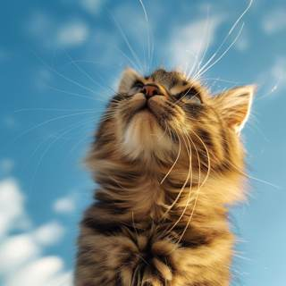

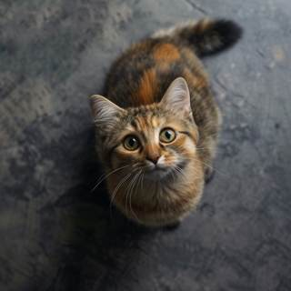
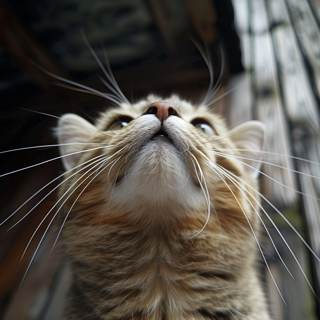
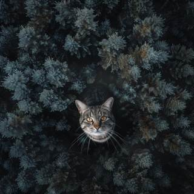

예시: 참고 자료(조남경) — 같은 고양이로 뷰만 바꾼 10장
실제 사진 더 보기 — 키워드별
실제 사진 더 보기
새 창에서 열립니다. 비슷한 예시를 보여 주는 참고용이며, 저작권은 각 사이트의 작가에게 있습니다.
한눈에 보기
뷰는 어느 방향에서 보느냐, 앵글은 얼마나 높은 곳에서 보느냐예요.
키워드 10개
| 키워드 | 뜻 | 그림책에서 이런 장면에 |
|---|---|---|
| front view | 앞에서 | 독자와 눈을 맞춤, 말 거는 장면 |
| side view | 옆에서 | 걷기·달리기, 이동하는 장면 |
| rear view | 뒤에서 | 떠나는 장면, 뒷모습의 여운 |
| high angle | 위에서 비스듬히 | 작고 약해 보임, 외로움·귀여움 |
| low angle | 아래에서 올려다봄 | 크고 당당해 보임, 결의·위압감 |
| bird eye view | 새처럼 높이서 | 마을 전체, 이야기 시작 |
| top view | 바로 위에서 | 식탁·책상·지도 위 |
| bottom view | 바로 아래에서 | 하늘·나무 꼭대기 올려보기 |
| drone view | 드론 높이 | 넓은 풍경 속 작은 주인공 |
| satellite view | 위성 | 지도 느낌, 그림책엔 드묾 |
굵은 다섯 개가 그림책 단골이에요.
직접 연습 — 키워드를 바꿔 끼우며 비교해요
드롭다운에서 키워드를 고르면 프롬프트가 바로 바뀌어요. 같은 캐릭터로 두세 개를 뽑아 나란히 비교해 보세요.
사람 ①사람 혼자
영어
한글로 보기
사람 ②사람 혼자
영어
한글로 보기
동물 ①동물 혼자
영어
한글로 보기
동물 ②동물 혼자
영어
한글로 보기
장면 ①장면 연출
영어
한글로 보기
장면 ②장면 연출
영어
한글로 보기
한 걸음 더
감정 실험
장면 ①을 high angle과 low angle로 한 장씩 뽑아 보세요. 같은 장면인데 어느 쪽이 더 신나 보이나요? 이유를 한 줄로 적어 보세요.
프레이밍(샷) — 얼마나 담느냐
얼굴만 담을지, 몸 전체를 담을지에 따라 전하는 이야기가 달라져요.
움직이는 설명 — 화면 틀이 다가가요
카메라가 다가갈수록 몸이 잘리는 선(빨간 선)이 올라가요. 샷은 「얼마나 담느냐」예요.
실제 예시 — 같은 사람, 다른 샷
예시: 참고 자료(조남경)의 전신 사진 한 장을 샷 단계별로 잘라 보여 줘요.

예시: 참고 자료(조남경) — close up / medium shot 사진
실제 사진 더 보기 — 샷별
실제 사진 더 보기
새 창에서 열립니다. 비슷한 예시를 보여 주는 참고용이며, 저작권은 각 사이트의 작가에게 있습니다.
한눈에 보기
Full shot = full body = full length, 다 같은 말이에요. 배경까지 넓게 담으면 long shot이에요.
장면에 맞는 샷
| 샷 | 담는 범위 | 그림책에서 이런 장면에 |
|---|---|---|
| extreme close up | 눈·입 | 놀람, 비밀, 결정적 순간 |
| close up | 얼굴 | 감정이 중요한 장면 |
| medium close up | 가슴 위 | 대화의 시작, 마음을 털어놓는 장면 |
| medium shot | 허리 위 | 대화·관계 장면 |
| medium full shot | 무릎 위 | 몸짓이 보이는 장면 |
| full shot | 전신 | 행동, 캐릭터 시트 |
| long shot | 전신 + 넓은 배경 | 장소 소개, 여정 |
잘 안 될 때
발까지 안 나와요
"full body"만 쓰면 발이 잘릴 때가 있어요. "full shot, feet visible, standing"처럼 몸 부위를 같이 적으면 잘 지켜져요.
얼굴이 너무 작아요
장면 연출에서 close up을 쓰면 두 캐릭터 중 한 명만 나올 수 있어요. 둘 다 담고 싶으면 medium shot부터 쓰세요.
직접 연습 — 샷을 바꿔 끼우며 비교해요
같은 캐릭터로 close up, medium shot, full shot을 한 장씩 뽑아 세 장을 나란히 놓아 보세요.
사람 ①사람 혼자
영어
한글로 보기
사람 ②사람 혼자
영어
한글로 보기
동물 ①동물 혼자
영어
한글로 보기
동물 ②동물 혼자
영어
한글로 보기
장면 ①장면 연출
영어
한글로 보기
장면 ②장면 연출
영어
한글로 보기
뷰 × 앵글 × 샷 — 섞어 쓰기
실제 프롬프트에서는 세 가지가 늘 같이 들어가요. 한 장면 = 어디서(방향) + 얼마나 높이(높이) + 얼마나 가까이(거리). 충돌 없이 섞는 법과, 조합마다 어떤 감정이 나오는지 배워요.
움직이는 설명 — 세 축 하나씩
뷰(고리) · 앵글(기둥) · 샷(레일)에서 하나씩 고르면 카메라 자리가 정해져요. 한 축에서 두 개를 고르거나 서로 부딪히면 빨갛게 변해요.
세 축은 서로 다른 방향이에요
방향 · 높이 · 거리는 서로 다른 축이라 한 축에서 하나씩 고르면 돼요. 같은 축에서 둘을 고르면(front view + rear view, close up + full shot) 충돌이에요.
쓰는 순서
[내 주제], 뷰, 앵글, 샷, 화풍, 효과, aspect ratio 3:4 — 뷰 → 앵글 → 샷 순서로, 쉼표로 이어요. 앵글은 눈높이면 eye level이라고 쓰거나 비워 둬도 돼요.
충돌 피하기 — 궁합표
○ 잘 어울려요 · △ 되지만 드물어요 · ✕ 모순이에요. bird eye view · top view · drone view · bottom view는 높이가 뷰 안에 들어 있어서 high angle · low angle을 또 쓰지 않아요.
| 뷰·앵글 ＼ 샷 | extreme close up | close up | medium close up | medium shot | medium full shot | full shot | long shot |
|---|---|---|---|---|---|---|---|
| front view | ○ | ○ | ○ | ○ | ○ | ○ | ○ |
| side view | ○ | ○ | ○ | ○ | ○ | ○ | ○ |
| rear view | ✕ | △ | ○ | ○ | ○ | ○ | ○ |
| high angle | △ | ○ | ○ | ○ | ○ | ○ | ○ |
| low angle | △ | ○ | ○ | ○ | ○ | ○ | ○ |
| bird eye view | ✕ | ✕ | ✕ | △ | ○ | ○ | ○ |
| top view | ✕ | ✕ | ✕ | △ | ○ | ○ | ○ |
| drone view | ✕ | ✕ | ✕ | ✕ | △ | ○ | ○ |
| bottom view | ✕ | ✕ | △ | ○ | ○ | ○ | ○ |
- rear view — 뒤통수 클로즈업은 감정이 안 보여요
- bird eye view — 높이서 넓게 보는 뷰라 얼굴 가까이와 모순
- top view — 바로 위에서 얼굴 가까이는 정수리뿐
- drone view — 드론 높이는 멀리서 보는 뷰
- bottom view — 바로 아래서 얼굴 가까이는 턱뿐
- △는 되긴 하지만 드문 연출이에요. 이유가 있을 때만 쓰세요.
조합마다 감정이 달라요 — 3 × 3
앵글(세로) × 샷(가로)만 바꿔도 아홉 가지 느낌이 나와요. 뷰는 여기에 「독자와 눈 맞춤(앞) · 움직임(옆) · 여운(뒤)」을 얹어요.
high angle + close up
귀여움 · 보살핌
내려다보이는 아기 얼굴, 안기려는 강아지
high angle + medium shot
풀 죽음 · 수줍음
혼나는 아이, 고개 숙인 모습
high angle + full shot
외로움 · 작음
길 잃은 아이, 텅 빈 운동장
eye level + close up
고백 · 눈 맞춤
비밀을 말하는 순간, 첫 만남
eye level + medium shot
대화 · 일상
식탁에서 이야기, 친구와 나란히
eye level + full shot
행동 · 소개
등장인물 소개, 걷고 뛰는 장면
low angle + close up
위압 · 결의
화난 어른, 결심한 눈
low angle + medium shot
당당함
용기 낸 아이, 가슴 편 주인공
low angle + full shot
영웅 · 거대함
거인, 산꼭대기에 선 주인공
그림은 구도를 보여 주는 도식이에요. 정답이 아니라 방향입니다.
조합 체험 — 골라서 바로 보기
세 개를 고르면 구도 미리보기 · 느낌 · 어울리는 장면 · 프롬프트가 같이 바뀌어요. 충돌이 나면 빨간 안내가 떠요.
느낌 · 감정
어울리는 장면
프롬프트
그림책 단골 조합 8가지
장면 → 느낌 → 조합 순서로 외워 두면 장면 처방이 빨라져요. 내 주제 한 줄 아래에 붙여 넣으세요.
등장인물 소개
책 첫머리, 주인공이 독자에게 인사하는 장면
느낌 · 감정: 친근함 · 소개
내 주제 아래에 붙여 넣기
한글로 보기
비밀을 털어놓는 순간
할아버지가 손녀에게 속삭이는 장면
느낌 · 감정: 친밀함 · 집중
내 주제 아래에 붙여 넣기
한글로 보기
용기를 내는 순간
주인공이 커다란 개 앞에 서는 장면
느낌 · 감정: 당당함 · 결의
내 주제 아래에 붙여 넣기
한글로 보기
혼자라는 걸 깨닫는 순간
길 잃은 아이가 텅 빈 공원에 서 있는 장면
느낌 · 감정: 외로움 · 작음
내 주제 아래에 붙여 넣기
한글로 보기
떠나는 뒷모습
친구가 멀어져 가는 장면
느낌 · 감정: 여운 · 그리움
내 주제 아래에 붙여 넣기
한글로 보기
결정적 발견
어두운 숲에서 눈이 커지는 순간
느낌 · 감정: 놀람 · 긴장
내 주제 아래에 붙여 넣기
한글로 보기
마을 소개
이야기의 무대를 처음 보여 주는 장면
느낌 · 감정: 설렘 · 시작
내 주제 아래에 붙여 넣기
한글로 보기
내려다보는 귀여움
강아지가 올려다보며 꼬리 흔드는 장면
느낌 · 감정: 귀여움 · 보살핌
내 주제 아래에 붙여 넣기
한글로 보기
콤비네이션 실습 — 캐릭터 6명으로 섞어 보기
뷰 · 앵글 · 샷을 하나씩 바꿔 가며 같은 캐릭터를 세 장 뽑아 나란히 놓아 보세요. 충돌 조합을 고르면 안내가 떠요.
사람 ①사람 혼자
영어
한글로 보기
사람 ②사람 혼자
영어
한글로 보기
동물 ①동물 혼자
영어
한글로 보기
동물 ②동물 혼자
영어
한글로 보기
장면 ①장면 연출
영어
한글로 보기
장면 ②장면 연출
영어
한글로 보기
잘 안 될 때
- 앵글이 안 먹혀요 → 뷰에 높이가 들어 있지 않은지 보세요(bird eye · top · drone). 그땐 앵글을 비워요.
- 얼굴이 안 보여요 → rear view + close up이면 뒤통수만 나와요. medium shot 이상으로.
- 발이 잘려요 → low angle + full shot엔
feet visible을 붙이세요. - 너무 멀어요 → long shot은 배경이 주인공이에요. 인물을 보여 주려면 full shot.
한 걸음 더 — 감정 곡선 세 장
같은 캐릭터로 high angle + long shot → eye level + medium shot → low angle + full shot 세 장을 뽑아 순서대로 놓아 보세요. 조합만 바꿨는데 「외로움 → 대화 → 용기」로 이야기가 생겨요. 각 장면에 한 줄 글을 붙여 보세요.
캐릭터 시트
책 한 권 내내 같은 캐릭터로 보이게, 그림 그리기 전에 생김새를 먼저 고정해요.
움직이는 설명 — 회전판 턴어라운드
캐릭터가 돌 때 정면 · 3/4 · 옆 · 뒤를 찍어 한 장으로 모아요. 바닥 · 그림자를 지우고 키 기준선을 맞추는 게 핵심이에요.
순서
앞 단계에서 만든 그림을 다음 단계에 첨부하는 게 핵심이에요. 챗GPT는 이미지 첨부 버튼, 플로우는 재료(Ingredients)로 넣어요.
1. 앵커 이미지 만들기
앵커 프롬프트 · 모든 그림의 기준이 될 첫 그림
② 그 아래에 그대로 붙여 넣기 — 영어
한글로 보기
그림자·바닥을 빼는 이유
발밑 그림자나 바닥이 생기면 흰 배경이 깨져서 누끼 따기와 캐릭터 시트 만들기가 어려워져요.
몇 장 뽑아서 생김새가 또렷하고 발까지 다 나온 한 장을 앵커로 저장하세요.
캐릭터 시트는 이렇게 생겼어요
예시 이미지 · 캐릭터 시트와 흰 배경 단독 사진은 이렇게 생겼습니다
새 창에서 열립니다. 비슷한 예시를 보여 주는 참고용이며, 저작권은 각 사이트의 작가에게 있습니다.
2. 턴어라운드
그대로 붙여 넣기 · 앵커 이미지를 첨부하고 그대로
영어 — 고칠 곳 없이 그대로
한글로 보기
3. 표정 시트
그대로 붙여 넣기 · 방금 만든 턴어라운드를 첨부하고 그대로
영어 — 고칠 곳 없이 그대로
한글로 보기
감정은 그림책에서 많이 쓰는 6개로 넣어 뒀어요. 바꾸고 싶으면 영어 단어만 바꾸세요. (curious, scared, proud, sleepy …)
빠르게 — 한 장에 다
그대로 붙여 넣기 · 턴어라운드와 표정을 한 번에 (칸이 작아져요)
영어 — 고칠 곳 없이 그대로
한글로 보기
조연은 정면 한 장
조연 프롬프트 · 비중이 작은 인물
② 그 아래에 그대로 붙여 넣기 — 영어
한글로 보기
잘 안 될 때
- 앵커는 캐릭터가 크게, 전신이 다 보이는 그림일수록 결과가 정확해요.
- 한두 칸만 어긋나면 다시 뽑지 말고 "오른쪽 끝 뒷모습만 첨부 이미지와 같게 다시"처럼 그 칸만 고쳐 달라고 하세요. 플로우 2.1에서는 「Keep everything … exactly the same. Only change: …」 문장 틀이 잘 먹혀요(도구 탭).
- 시트 비율(16:9, 3:2)은 장면 비율(3:4)과 달라도 괜찮아요.
화풍 — 어떤 재료와 방식으로 그리느냐
화풍은 그림을 무엇으로, 어떤 방식으로 그렸는지예요. 하나씩 읽고 연습 프롬프트로 직접 뽑아 보세요.
한 단어 → 조합으로
watercolor큰 방향만 정해져요watercolor + thin pencil lines + muted warm colors + simple background재료 + 선 + 색 + 배경화풍 키워드 하나는 출발점이에요. 마음에 드는 화풍을 찾으면 선·색·배경을 더해 내 화풍으로 고정하세요.
화풍 사전 — 38가지
캐릭터를 고르고 카드의 버튼을 누르면 [캐릭터], [화풍], 그림책 일러스트, aspect ratio 3:4 프롬프트가 복사돼요.

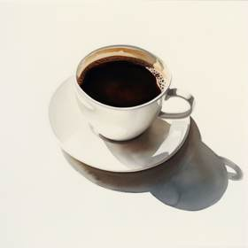
예시: 참고 자료(조남경)
더 보기: Pexels · Unsplash · 위키미디어
수채화watercolor
물에 푼 물감이 번지고 비치는 그림. 맑고 부드러워요.
그림책: 잔잔한 감성, 자연, 잠자리 이야기
주의: 혼자 쓰면 물감이 과하게 번져요. 선·색을 함께 정하세요.


예시: Ivan Bilibin 그림책 삽화(수채·과슈), 퍼블릭 도메인 · Wikimedia Commons
더 보기: Pexels · Unsplash · 위키미디어
과슈gouache
불투명한 수채 물감. 색이 또렷하고 평평해서 빈티지 그림책 느낌이 나요.
그림책: 따뜻한 옛날 그림책 분위기


예시: George Topîrceanu 색연필 고양이(퍼블릭 도메인), 색연필 커피잔 · Wikimedia Commons
더 보기: Pexels · Unsplash · 위키미디어
색연필colored pencil
결이 보이는 부드러운 채색. 손으로 그린 느낌이 강해요.
그림책: 일상, 가족, 따뜻한 이야기


예시: 아이의 크레용 그림(CC BY-SA), 크레용과 그림 · Wikimedia Commons
더 보기: Pexels · Unsplash · 위키미디어
크레용crayon texture
굵고 거친 질감. 아이가 그린 듯 소박해요.
그림책: 유아 그림책, 아이 시점 이야기

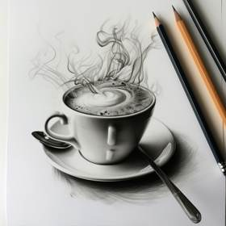
예시: 참고 자료(조남경)
더 보기: Pexels · Unsplash · 위키미디어
연필 그림pencil drawing
흑연 선과 명암으로 그린 스케치 느낌.
그림책: 회상, 옛 기억, 차분한 장면
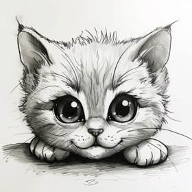
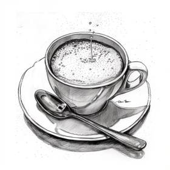
예시: 참고 자료(조남경)
더 보기: Pexels · Unsplash · 위키미디어
펜 그림pen drawing
가늘고 또렷한 선 위주의 그림.
그림책: 세밀한 배경, 선이 돋보이는 그림책
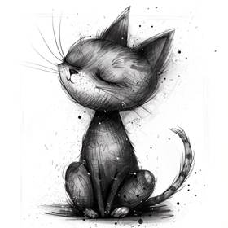

예시: 참고 자료(조남경)
더 보기: Pexels · Unsplash · 위키미디어
잉크화ink drawing
진한 잉크·붓펜으로 그린 강약 있는 선.
그림책: 대비가 강한 장면, 모험

예시: 퍼블릭 도메인 · Wikimedia Commons
더 보기: Pexels · Unsplash · 위키미디어
수묵 담채ink wash
먹의 진하고 옅음에 옅은 색을 살짝 얹은 그림.
그림책: 한국적·동양적 이야기, 전래동화

예시: 퍼블릭 도메인 · Wikimedia Commons
더 보기: Pexels · Unsplash · 위키미디어
민화Korean folk painting (minhwa) style
조선 민간 그림. 평면적이고 익살스러워요.
그림책: 전래동화, 풍자가 있는 이야기
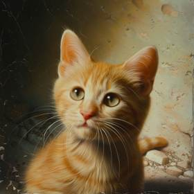

예시: 참고 자료(조남경)
더 보기: Pexels · Unsplash · 위키미디어
유화oil painting
두껍고 진한 붓 터치, 깊은 색감.
그림책: 고전·명작 느낌, 어른 그림책
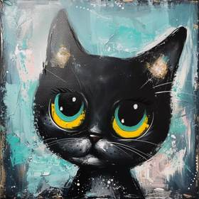

예시: 참고 자료(조남경)
더 보기: Pexels · Unsplash · 위키미디어
아크릴화acrylic paint
선명하고 진한 색, 붓 자국이 보여요.
그림책: 밝고 힘 있는 장면
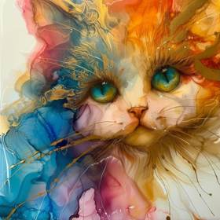

예시: 참고 자료(조남경)
더 보기: Pexels · Unsplash · 위키미디어
알코올 잉크alcohol ink
잉크가 퍼지며 만든 흐르는 무늬. 몽환적이에요.
그림책: 꿈·환상 장면의 배경
.jpg?width=600)
예시: 퍼블릭 도메인 · Wikimedia Commons
더 보기: Pexels · Unsplash · 위키미디어
판화linocut print
판에 새겨 찍은 굵은 선과 면, 2~3가지 색.
그림책: 어른도 읽는 그림책, 민속 이야기
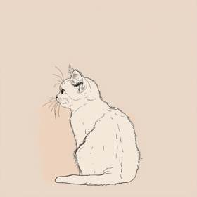
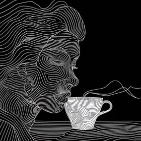
예시: 참고 자료(조남경)
더 보기: Pexels · Unsplash · 위키미디어
한 줄 그림one line art
선 하나를 끊지 않고 이어 그린 그림.
그림책: 미니멀 표지, 감성 페이지


예시: 참고 자료(조남경)
더 보기: Pexels · Unsplash · 위키미디어
애니메이션animation style
애니메이션 한 장면처럼 매끈한 채색과 연출.
그림책: 밝고 움직임 많은 장면
주의: 특정 스튜디오·작품 이름은 넣지 마세요.
예시: 교안 자체 제작 그림
더 보기: Pexels · Unsplash · 위키미디어
플랫 디지털flat digital illustration
그림자 없이 단순한 면과 도형으로 그린 그림.
그림책: 지식 그림책, 깔끔한 현대 느낌
예시: 교안 자체 제작 그림
더 보기: Pexels · Unsplash · 위키미디어
질감 디지털 페인팅textured digital painting
디지털이지만 붓과 종이 질감이 살아 있는 그림.
그림책: 모험, 영화 같은 장면

예시: 앙리 루소(나이브 아트), 퍼블릭 도메인 · 교안 자체 제작 그림
더 보기: Pexels · Unsplash · 위키미디어
나이브naive whimsical style
흔들리는 선, 서툰 듯한 매력, 파스텔 색.
그림책: 요즘 감성, 아이 마음을 담은 이야기
예시: 교안 자체 제작 그림
더 보기: Pexels · Unsplash · 위키미디어
고대비 도형simple bold shapes, high contrast
큰 도형과 흑백·원색의 강한 대비.
그림책: 0~3세 아기 그림책


예시: 참고 자료(조남경)
더 보기: Pexels · Unsplash · 위키미디어
아이소메트릭isometric
비스듬히 위에서 본 입체 도면 같은 그림.
쓰임: 교재 · 설명 자료 · 부록의 구조도
주의: 동화 본문 그림으로는 비추천 — 설명서처럼 보여요. 과학 · 자연 그림책은 세밀화(field guide style)가 맞아요.
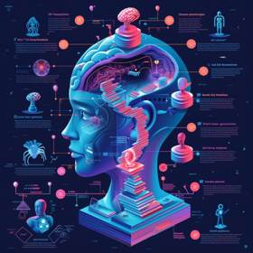
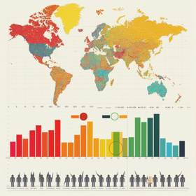
예시: 참고 자료(조남경)
더 보기: Pexels · Unsplash · 위키미디어
인포그래픽infographic
정보를 그림과 도표로 정리한 그림.
쓰임: 교재 · 설명 자료의 도표 페이지
주의: 동화 본문 그림으로는 비추천. 이 말이 들어가면 입체 블록(아이소메트릭)으로 나오기 쉬워요. 그림 속 글자도 잘 깨져요.

예시: 참고 자료(조남경)
더 보기: Pexels · Unsplash · 위키미디어
클립아트clipart
아이콘처럼 단순한 그림, 보통 흰 배경.
그림책: 스티커, 활동지, 등장인물 소개


예시: 참고 자료(조남경)
더 보기: Pexels · Unsplash · 위키미디어
컬러링북coloring book page
색 없이 굵은 선만 남긴 선화.
그림책: 색칠북 상품, 활동지

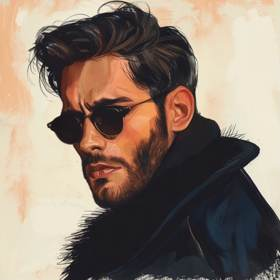
예시: 참고 자료(조남경)
더 보기: Pexels · Unsplash · 위키미디어
패션 일러스트fashion illustration
길쭉한 몸 비율에 옷을 강조한 그림.
그림책: 그림책엔 드물어요. 의상 소개 페이지 정도
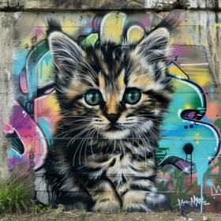

예시: 참고 자료(조남경)
더 보기: Pexels · Unsplash · 위키미디어
그래피티graffiti
거리 벽화처럼 스프레이로 그린 느낌.
그림책: 도시 배경, 개성 강한 이야기
예시: 교안 자체 제작 그림
더 보기: Pexels · Unsplash · 위키미디어
종이 콜라주paper cut collage
색종이를 오려 겹겹이 붙인 그림.
그림책: 촉감 있는 유아 그림책

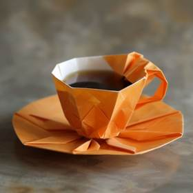
예시: 참고 자료(조남경)
더 보기: Pexels · Unsplash · 위키미디어
종이접기origami
접은 종이로 만든 캐릭터와 세상.
그림책: 종이 나라 이야기

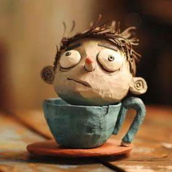
예시: 참고 자료(조남경)
더 보기: Pexels · Unsplash · 위키미디어
클레이메이션claymation
점토 인형으로 만든 듯한 입체 그림.
그림책: 귀엽고 입체적인 이야기

비슷한 예: 클레이메이션·디오라마 — 참고 자료(조남경)
더 보기: Pexels · Unsplash · 위키미디어
클레이 미니어처clay miniature
작은 세트장을 찍은 사진 같은 입체.
그림책: 따뜻한 미니어처 세상
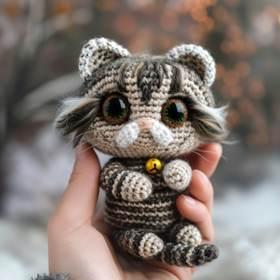
예시: 교안 자체 제작 그림 · 비슷한 예: 아미구루미(참고 자료)
더 보기: Pexels · Unsplash · 위키미디어
펠트·천felt and fabric
바느질한 천 인형 느낌.
그림책: 포근한 유아 그림책


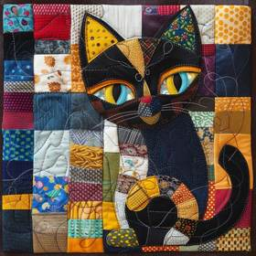

예시: 참고 자료(조남경)
더 보기: Pexels · Unsplash · 위키미디어
패치워크patchwork
여러 천 조각을 이어 붙인 무늬.
그림책: 다양한 이웃이 사는 마을
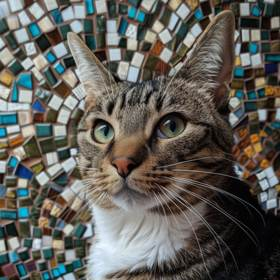
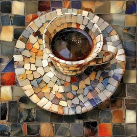
예시: 참고 자료(조남경)
더 보기: Pexels · Unsplash · 위키미디어
모자이크mosaic
작은 타일 조각을 맞춘 그림.
그림책: 장식적인 표지
참고: 기법 목록 일부는 오빠두엑셀 LIVE 166회 「자판기 키워드」(조남경)를 참고해 설명을 새로 썼어요.
번역 바로잡기
| 키워드 | 참고 자료 표기 | 바른 뜻 |
|---|---|---|
| Knolling | 롤링 | 놀링 — 물건을 가지런히 펼쳐 놓고 위에서 찍기 |
| Silhouette | 그림자 | 실루엣 — 윤곽만 어둡게 |
| bokeh | 산란효과 | 보케 — 배경 흐림과 빛망울 |
| Graffiti | 낙서 | 그래피티 — 거리 벽화 |
효과 — 빛·카메라·연출
효과는 화풍 위에 얹는 양념이에요. 무엇으로 그렸는지가 아니라 빛과 카메라가 어떤지를 정해요.
움직이는 설명 — 빛만 바꿔 보기
같은 아이, 같은 젖은 길 — 빛만 바뀌어요. 아래 효과 이름을 누르면 그 빛에서 멈춰요.
화풍과 효과는 달라요
화풍
- 무엇으로 그렸나
- 수채화, 색연필, 클레이…
- 책 한 권 내내 고정
효과
- 빛·카메라가 어떤가
- 역광, 보케, 실루엣…
- 장면마다 바꿔도 됨
예) [캐릭터], watercolor, golden hour lighting — 화풍은 수채화로 고정하고, 마지막 장면에만 골든 아워를 얹어요.
효과 사전 — 13가지 + 비교 1
효과는 화풍과 같이 써야 그림책다워요. 버튼을 누르면 [캐릭터], watercolor, [효과], 그림책 일러스트, aspect ratio 3:4가 복사돼요.
효과 단어 하나만으로는 안 나와요. 카드마다 시간 · 장소 · 빛 방향 · 상황이 들어간 완성 문장이 보이고, 그대로 복사돼요.
실사 ★를 고르면 실사 사진 문장(렌즈 · 조리개 포함), 다른 캐릭터를 고르면 그 효과에 맞는 빛과 분위기의 그림책 문장이 나와요. 실사로 효과를 먼저 확인하고, 그림책 캐릭터로 옮겨 보세요.
비교 쌍: 보케 ↔ 아웃포커싱 · 실루엣 ↔ 역광 · 모든 효과 ↔ 부드러운 자연광(기준)
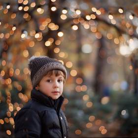

예시: 참고 자료(조남경)
더 보기: Pexels · Unsplash · 위키미디어
보케bokeh
배경을 흐리게 하고 빛을 동그란 빛망울로.
그림책: 주인공 강조, 밤의 불빛
참고 자료
예시: 교안 자체 제작 그림 — 뒤에 불빛이 없어 둥근 빛망울은 안 생겨요
아웃포커싱shallow depth of field
주인공만 또렷하고 배경은 부드럽게 흐리게. 보케와 비교해 보세요.
그림책: 차분한 장면에서 주인공에게 시선 모으기
비교: 보케 = 아웃포커싱 + 뒤의 작은 불빛
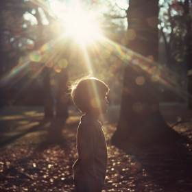

예시: 참고 자료(조남경)
더 보기: Pexels · Unsplash · 위키미디어
렌즈 플레어lens flare
강한 빛이 렌즈에 반사돼 생긴 빛줄기.
그림책: 해 뜨는 희망 장면 (그림책에선 약하게)
참고 자료
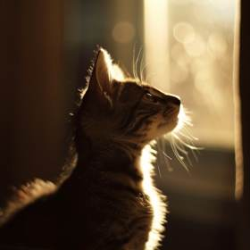

예시: 참고 자료(조남경)
더 보기: Pexels · Unsplash · 위키미디어
실루엣silhouette
빛을 등지고 윤곽만 어둡게.
그림책: 노을 속 이별, 여운이 남는 장면
참고 자료

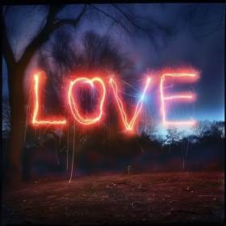
예시: 참고 자료(조남경)
더 보기: Pexels · Unsplash · 위키미디어
빛 그림light painting
빛이 지나간 궤적을 선으로.
그림책: 마법, 별똥별, 반딧불
참고 자료
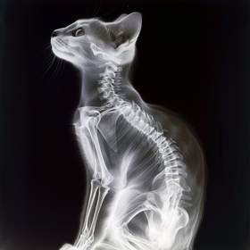
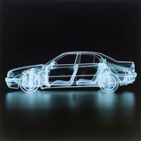
예시: 참고 자료(조남경)
더 보기: Pexels · Unsplash · 위키미디어
엑스레이x-ray
속이 비쳐 보이게.
그림책: 몸속·기계 속을 설명하는 지식 그림책
참고 자료

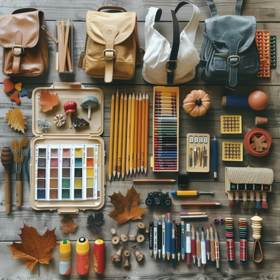
예시: 참고 자료(조남경)
더 보기: Pexels · Unsplash · 위키미디어
놀링knolling
물건을 가지런히 펼쳐 놓고 위에서.
그림책: 가방 속 준비물, 소개 페이지
참고 자료
예시: 교안 자체 제작 그림
더 보기: Pexels · Unsplash · 위키미디어
골든 아워golden hour lighting
해 질 녘의 따뜻한 금빛.
그림책: 따뜻한 마무리, 귀갓길
추가


한 걸음 더
같은 장면, 다른 빛
장면 ①을 soft natural light, golden hour lighting, dramatic shadows로 세 번 뽑아 보세요. 빛만 바꿨는데 이야기의 분위기가 어떻게 달라지나요?
내용과 화풍 매칭
이야기 분위기에 맞는 화풍을 골라요. 같은 화풍이라도 장면이 안 맞으면 어색해져요 — 카드마다 어울리는 동화 · 안 어울리는 동화를 비교해 봐요.
카드 보는 법
동화는 누구나 아는 이야기로 골랐어요 — 이야기 분위기를 알아야 화풍이 맞는지 판단할 수 있으니까요. 한 카드의 세 프롬프트는 화풍 묶음(맨 앞 문장)이 글자 하나까지 같고 장면만 달라요. ✕ 칸에는 그 장면에 맞는 화풍도 적어 두었어요.
이 STEP은 화풍을 맨 앞에 써요
화풍 이름만 뒤에 붙이면 장면에 묻혀서, 「단순 도형」이 세밀하게 · 「카툰」이 실사 삽화처럼 나왔어요. 그래서 이 STEP은 [화풍 이름 + 선 · 색 · 질감]. Scene: [원작 출처], [장면], [앵글], [샷], no text, no frame, aspect ratio 3:4 순서로 써요. 다른 STEP의 기본 순서는 그대로예요. 화풍이 안 먹힐 땐 어디서든 이 방법을 쓰면 돼요.
워스트가 너무 잘 나오면 — AI가 알아서 어울리게 보정한 거예요. 플로우에 「화풍을 장면에 맞게 바꾸지 말고 맨 앞 문장 그대로」라고 같이 적어 주세요. 보정된 결과도 「AI는 어울리게 맞추려 한다」는 배움이에요.
비율은 프롬프트만 믿지 말고 플로우 설정에서도 세로(3:4)로 맞춰 주세요.
「정책상 만들 수 없어요」가 뜰 때 — 브랜드 필터 피해 가기
신데렐라 · 인어공주 · 알라딘 원작은 저작권이 끝난 옛이야기예요. 그런데 주인공 이름 + 대표 장면(자정의 유리구두, 공주와 양탄자)이 함께 들어가면, 플로우는 유명 애니메이션 장면을 그리라는 뜻으로 보고 막아요. 막히지 않으려면 원작에서 출발해 나만의 캐릭터로 그리세요. 이 페이지의 프롬프트는 모두 이 방식으로 고쳐 두었어요.
| 방법 | 이렇게 써요 |
|---|---|
| ① 이름 대신 생김새 | Cinderella → a young girl with a dark braid |
| ② 원작 출처 밝히기 | from the classic French fairy tale · from the Arabian Nights tale |
| ③ 애니와 다른 옷 · 색 · 머리 | 파란 드레스 대신 rose-pink gown, 빨간 머리 인어 대신 silver-white hair |
| ④ 새 디자인이라고 밝히기 | 끝에 original character design |
| ⑤ 물건 이름도 풀어 쓰기 | glass slipper → glass shoe, magic carpet → flying patterned rug |
시대가 엉뚱하게 나올 때 — 「적벽대전」을 generals · warships로만 쓰면 나폴레옹 시대의 유럽 해전이 나와요. AI가 기본값으로 서양 그림을 꺼내기 때문이에요. 시대(Three Kingdoms era, 208 AD) · 장소(Yangtze River) · 배(ancient Chinese warships) · 옷(Han dynasty armor)을 적고, 끝에 no European ships, no Western uniforms를 붙이세요.
쓰지 말 것 — Disney style · Pixar style 같은 스튜디오 이름, 애니메이션 캐릭터 이름. 이런 말은 막히는 원인이 되고, 출판하면 저작권 문제가 생겨요. 우회는 「애니메이션을 따라 그리기」가 아니라 「원작으로 돌아가 내 디자인으로 그리기」예요.
잔잔한 감성 · 잠자리 이야기watercolor, soft gouache

화풍 묶음 — 세 장 모두 같아요Soft watercolor painting with gentle gouache touches: wet-on-wet color bleeding, visible paper texture, soft blurred edges, gentle muted palette

눈 내리는 섣달그믐 밤, 소녀가 성냥을 켜자 불빛 속에 따뜻한 난로와 할머니가 보인다
왜 맞나 눈 · 작은 불빛 · 그리움 — 물감 번짐이 꿈과 현실 사이를 부드럽게 이어 줘요.
수정 사유 화풍을 맨 앞으로. 소녀 옷차림(얇은 숄)과 샷을 넣어 인물이 또렷하게.

칠석날 밤, 까마귀와 까치가 놓은 오작교 위에서 견우와 직녀가 1년 만에 만난다
왜 맞나 별빛 · 은하수 · 그리움 — 번지는 물감이 고요한 밤의 감정을 감싸요.
수정 사유 한복을 적어 서양 옷이 나오지 않게. 로마자 이름(Gyeonu · Jiknyeo)보다 생김새가 확실해서 바꾸고, 원문대로 까마귀(crows)도 넣음.

도둑 40명이 칼을 들고 소리치며 비밀 동굴로 몰려든다
왜 어색하나 긴박한 습격이 부드러운 번짐에 녹아 「소풍 가는 그림」처럼 맥이 빠져요 → 이 장면엔 「모험 · 활동」.
수정 사유 장면의 「사나움」을 세게 적어야 화풍과 부딪히는 게 보여요.
유머 · 풍자flat 2D cartoon
_bottom_half.jpeg?width=600)
화풍 묶음 — 세 장 모두 같아요Flat 2D cartoon illustration: bold clean black outlines, flat solid colors with no shading, big heads, rubbery exaggerated expressions, simple shapes, bright saturated palette

도깨비들이 노래 잘하는 혹부리 영감의 혹을 떼어 가며 신나게 춤춘다
왜 맞나 과장된 도깨비 표정 · 엉뚱한 소동 — 카툰이 해학을 살려요.
수정 사유 dokkaebi만 쓰면 일본 오니(뿔 · 호랑이 가죽)처럼 나오기 쉬워요. 옛 그림 속 도깨비처럼 뿔 없이 · 덥수룩한 머리 · 큰 코 · 조선 옷 · 방망이로 적음.

행진하는 임금님을 보고 한 아이가 「임금님이 벌거벗었다!」 하고 외친다
왜 맞나 과장된 표정과 상황 개그 — 카툰이 풍자를 바로 살려요.
수정 사유 지난번엔 카툰이 약해 실사 삽화처럼 나옴 → 카툰 특징(굵은 선 · 납작한 색 · 큰 머리)을 맨 앞에.

새벽 바다에서 인어공주가 물거품이 되어 사라진다
왜 어색하나 슬픈 마지막 장면이 카툰의 가벼운 선과 색 때문에 우스꽝스러워져요 → 이 장면엔 「잔잔한 감성」이나 「어른도 읽는 그림책」.
수정 사유 브랜드 필터 대비: 이름 대신 생김새, 애니와 다른 머리색 · 꼬리색. 노출로 막히지 않게 윗옷을 적음. 슬픔을 세게 적어 충돌이 보이게.
전래동화 · 한국적인 이야기Korean folk painting (minhwa), ink wash
이 호랑이는 일부러 우스꽝스럽게 그려서 양반을 풍자한 거예요. 풍자 + 한국적 이야기에 딱이에요.
화풍 묶음 — 세 장 모두 같아요Traditional Korean folk painting (minhwa) with ink wash: ink brush outlines, flat mineral colors on aged hanji paper, stylized pine trees, rocks and clouds, playful folk charm

용궁에서 토끼가 「간은 육지에 두고 왔다」며 용왕과 신하들을 속인다
왜 맞나 용궁 · 물고기 신하 · 해학 — 민화 특유의 우스꽝스러운 맛이 살아요.
수정 사유 용왕은 한국 왕의 옷, 물고기 신하는 조선 관리 모자(사모)로 적어 중국 · 서양식으로 새지 않게. 화풍 묶음의 소나무가 바닷속에 그려질 수도 있어요 — 민화다운 장식이라 괜찮아요.

고갯길에서 호랑이가 「떡 하나 주면 안 잡아먹지」 하며 떡 바구니를 인 어머니를 막아선다
왜 맞나 민화 호랑이 · 고갯길 · 한복 — 화풍과 이야기가 같은 뿌리예요.
수정 사유 민화 호랑이의 생김새(동그란 눈 · 익살스러운 웃음)와 조선 시대를 적음.

구름 위 거인의 돌성에서 잭이 황금 알을 낳는 거위를 안고 도망친다
왜 어색하나 서양 돌성 · 거인 · 복식을 민화로 그리면 배경과 옷이 엇나가 「국적 불명」 그림이 돼요 → 이 장면엔 「모험 · 활동」.
수정 사유 지난번엔 AI가 잭을 한국 아이로 바꿔 「어울리게」 보정함 → 금발 · 서양 옷 · 고딕 성을 적어 충돌을 살림.
따뜻한 일상 · 가족colored pencil, crayon texture
화풍 묶음 — 세 장 모두 같아요Hand-drawn colored pencil and crayon illustration: visible pencil strokes and waxy crayon texture on rough paper, warm cozy colors, slightly uneven handmade feel

달밤에 형과 아우가 서로 몰래 볏단을 옮기다 들판 한가운데서 마주친다
왜 맞나 형제의 정 · 소박한 시골 — 손맛 나는 결이 따뜻함을 더해요.
수정 사유 한복 · 가을 달밤을 적고, 두 사람의 표정(놀람 · 웃음)을 넣음.

할아버지, 할머니, 손녀, 강아지, 고양이, 생쥐가 줄줄이 커다란 순무를 당긴다
왜 맞나 가족이 힘을 모으는 다정한 장면 — 크레용 결이 따뜻함을 더해요.
수정 사유 여섯이 다 나와야 해서 long shot 유지. 화풍만 앞으로.

폭풍 치는 바다에서 거대한 로크 새가 바위를 떨어뜨려 신드바드의 배를 공격한다
왜 어색하나 거대한 스케일과 공포가 색연필 · 크레용 결에서 작고 귀여워져 위압감이 사라져요 → 이 장면엔 「모험 · 활동」.
수정 사유 배를 아랍 범선(dhow)으로 적어 해적선이 나오지 않게. 공포 · 크기를 세게.
촉감 · 공예 느낌paper cut collage, felt, clay miniature
화풍 묶음 — 세 장 모두 같아요Handmade craft diorama: paper-cut collage background, felt and fabric characters with visible stitches, clay miniature props, soft studio light

노란 가발을 쓴 할아버지가 나무 공방에서 아직 덜 깎은 꼭두각시 인형을 만들고 있다
왜 맞나 나무 결 · 공방 도구 · 손으로 만드는 이야기 — 공예 질감과 딱 맞아요.
수정 사유 브랜드 필터 대비: 이름 대신 생김새. 원작(콜로디)의 할아버지는 마르고 노란 가발을 써요 — 애니의 흰머리 할아버지와 다르게. 깎는 중인 인형은 옷 없는 맨 나무로.

짚으로 지은 집, 나무로 지은 집, 벽돌로 지은 집 앞에 아기 돼지 삼형제가 서 있다
왜 맞나 짚 · 나무 · 벽돌 — 재료의 질감이 이야기의 핵심이라 공예 화풍이 딱이에요.
수정 사유 지난번 결과 좋음. 화풍 묶음만 앞으로.

얼음 궁전에서 눈의 여왕이 투명하게 반짝이는 얼음 왕좌에 앉아 있다
왜 어색하나 투명함과 반짝이는 빛은 펠트 · 종이로 표현하기 어려워요. 차가운 얼음 궁전이 포근한 인형극 무대처럼 보이기 쉬워요 → 이 장면엔 빛을 칠할 수 있는 「모험 · 활동」의 디지털 페인팅.
수정 사유 브랜드 필터 대비: 흰 털망토 · 고드름 왕관으로 유명 애니 캐릭터와 다르게. frozen이라는 단어는 뺌.
모험 · 활동cinematic textured digital painting
아래 프롬프트로 직접 뽑아 채워 보세요.
화풍 묶음 — 세 장 모두 같아요Cinematic textured digital painting: dramatic sweeping composition, painterly brush texture, strong contrast of light and shadow, rim light, sense of depth and motion

손오공이 근두운을 타고 구름 바다 위를 날며 여의봉을 휘두른다
왜 맞나 하늘을 가르는 액션 — 시네마틱 구도가 박진감을 살려요.
수정 사유 갑옷 · 망토를 적고 original character design으로 게임 · 만화 캐릭터와 겹치지 않게.

어머니가 낡은 램프를 닦자 좁은 집 안에 거대한 요정이 연기처럼 솟아오르고, 소년이 놀라 올려다본다
왜 맞나 솟아오르는 요정 · 강한 빛 · 올려다보는 구도 — 영화 같은 화풍이 놀라움을 키워요.
수정 사유 「공주와 양탄자」는 플로우가 정책으로 막았고, 원작 알라딘에는 하늘 나는 양탄자도 없어요(다른 이야기). → 원작 그대로 어머니가 램프를 닦는 장면으로 교체, 요정은 애니와 다른 금빛 연기 · 수염.

엄지 공주가 호두 껍데기 침대에서 장미 꽃잎을 덮고 잠든다
왜 어색하나 작고 고요한 순간에 영화 같은 조명 · 구도가 붙으면 「대작 포스터」처럼 과장돼요. 예쁘게 나와도 장면보다 연출이 커 보여요 → 이 장면엔 「잔잔한 감성」.
수정 사유 이름 대신 「엄지만 한 소녀」. 고요함을 세게 적어 충돌이 보이게.
과학 · 자연 지식 그림책detailed nature illustration (field guide style)
화풍 묶음 — 세 장 모두 같아요Detailed nature picture-book illustration (field guide style): fine ink outlines, soft colored pencil and light watercolor, accurate natural details, earthy colors, cream paper background
들판 나무 아래에서 토끼가 낮잠을 자고, 거북이가 그 옆을 천천히 지나간다
왜 맞나 실제 동물 생김새 · 들꽃 · 풀 — 도감 그림이 자연을 꼼꼼하게 보여 줘요.
수정 사유 새 장면. 「80일간의 세계 일주」(아이소메트릭 지도)는 동화 그림이 아니라서 뺌.

땅속 개미굴을 옆에서 본 단면 — 식량 창고, 알 방, 여왕개미 방이 굴로 이어져 있다
왜 맞나 땅속 구조 · 곤충처럼 「자세히 들여다보는」 장면 — 세밀화가 제일 잘 살려요.
수정 사유 아이소메트릭 · 인포그래픽은 동화책 그림이 아님 → 세밀화로 교체. cutaway는 입체 블록이 나오기 쉬워 「자연책 한 쪽처럼 납작한 옆 단면」으로. 「not isometric」 같은 말도 오히려 그 단어를 끌어올 수 있어 뺌.

자정 종이 울리자 소녀가 유리구두 한 짝을 떨어뜨리고 궁전 계단을 달려 내려간다
왜 어색하나 마법 · 설렘 · 다급함이 차분한 도감 그림 결에 눌려 움직임이 멈춘 것처럼 보이기 쉬워요. 옛 동화 삽화처럼 무난하게 나올 수도 있어요 → 이 장면엔 「잔잔한 감성」이나 「요즘 느낌」.
수정 사유 플로우가 정책으로 막음 → 이름을 빼고 애니와 다른 생김새(검은 땋은 머리 · 장밋빛 드레스)로. 화풍은 세밀화로 교체.
아기 그림책(0~3세)toddler board book, simple bold shapes
화풍 묶음 — 세 장 모두 같아요Toddler board book style: only big flat geometric shapes, maximum five flat colors, thick black outlines, high contrast, no texture, no small details

둥근 보름달 안에서 토끼가 절구에 떡방아를 찧는다
왜 맞나 동그라미 하나 + 토끼 하나 — 고대비 큰 도형에 딱이에요.
수정 사유 화풍 묶음에 「색 다섯 개까지 · 작은 것 없음」을 적어 단순함을 지키게.

식탁 위에 큰 그릇, 중간 그릇, 작은 그릇이 나란히 놓이고 크기가 맞는 곰 세 마리가 서 있다
왜 맞나 크기 비교 · 하나씩 또렷하게 — 아기 눈에 잘 들어오는 큰 도형이 딱이에요.
수정 사유 정면 · 미디엄 샷으로 세 크기가 한눈에 비교되게.

소년이 상인 · 양탄자 · 향신료 · 등불 · 낙타로 북적이는 옛 바그다드 시장을 걷는다
왜 어색하나 작은 것이 많은 장면을 단순 도형으로 그리면 뭉개지거나 정보가 사라져요 → 이 장면엔 「모험 · 활동」.
수정 사유 지난번엔 「단순 도형」을 무시하고 세밀하게 나옴 → 화풍을 맨 앞에, 「색 다섯 개 · 작은 것 없음」을 적음. 이름 · 조끼 차림은 애니 시장 장면과 겹쳐 빼고 긴 웃옷 · 허리띠로. 원작 알라딘의 무대는 바그다드가 아니라서 제목도 「아라비안나이트」로.
어른도 읽는 그림책linocut print, muted palette
화풍 묶음 — 세 장 모두 같아요Linocut print: carved bold black lines, rough ink texture, limited muted palette of two or three colors

선녀가 두 아이를 안고 하늘로 올라가고, 나무꾼이 홀로 남아 올려다본다
왜 맞나 이별 · 그리움 — 어른 독자도 오래 머무는 장면이에요.
수정 사유 선녀의 날개옷(feathered robe)과 한복을 적어 서양 천사처럼 나오지 않게.

눈 내리는 겨울밤, 금박이 다 벗겨진 왕자 동상 발치에 제비가 쓰러져 있다
왜 맞나 희생 · 쓸쓸함 · 여운 — 차분한 판화가 깊은 감정을 받쳐 줘요.
수정 사유 올려다보는 앵글로 동상의 쓸쓸한 크기를 살림.

당나귀 위에 개, 개 위에 고양이, 고양이 위에 닭이 올라서서 소리를 질러 도둑들을 쫓아낸다
왜 어색하나 신나는 소동이 차분한 색과 무거운 판화 선에 눌려 「신남」이 가라앉아요 → 이 장면엔 「유머 · 풍자」.
수정 사유 소동의 「신남」을 세게 적어 충돌이 보이게.
요즘 느낌naive whimsical illustration, pastel
화풍 묶음 — 세 장 모두 같아요Naive whimsical illustration: wobbly hand-drawn lines, soft pastel colors, rounded cute shapes, simple childlike charm

흥부 가족이 커다란 박을 톱으로 타자 박 속에서 쌀과 금은보화가 쏟아진다
왜 맞나 놀라움 · 기쁨 · 엉뚱한 상상 — 귀엽고 말랑한 선이 잘 어울려요.
수정 사유 한복 · 초가집을 적어 배경이 한국으로 나오게.

커다란 장화를 신은 고양이가 깃털 모자를 쓰고 뽐내며 시골길을 걷는다
왜 맞나 귀여움 · 엉뚱함 — 흔들리는 선과 파스텔이 매력을 살려요.
수정 사유 브랜드 필터 대비: 회색 줄무늬 고양이로 유명 애니(주황 고양이)와 다르게.

밤 강 위에서 수백 척의 배가 불길에 휩싸이고, 장수들이 강가에서 지휘한다
왜 어색하나 거대한 전쟁의 장엄함이 흔들리는 파스텔에서 장난처럼 보여요 → 이 장면엔 「모험 · 활동」.
수정 사유 나폴레옹 시대 유럽 해전이 나옴 → 시대 · 강 · 배 · 갑옷을 적고 서양 요소를 막음.
규칙
화풍 이름은 일반 용어만
작가 이름은 프롬프트에 넣지 않아요. 옛 그림은 "이런 느낌" 참고용이고, 그 그림을 그대로 따라 그리게 하지 않아요.
한 걸음 더
내 이야기에 맞는 화풍 두 개를 골라 같은 장면을 두 번 뽑고, 어느 쪽이 이야기와 더 맞는지 이유를 적어 보세요.
판형과 비율
책 크기(판형)가 정해지면 그림 비율이 정해져요. 그림을 다 뽑은 뒤 바꾸면 전부 다시 해야 해요.
움직이는 설명 — 판형과 비율
같은 장면도 비율이 바뀌면 AI가 구도를 다시 짜요 — 잘리는 게 아니에요. 끝에 ★ · ✕ 조합도 나와요.
판형 한눈에
판형 → 프롬프트 문장
| 판형 | 프롬프트에 쓰는 문장 | 어울리는 책 |
|---|---|---|
| 정사각 8.5×8.5인치 (21.6cm) | aspect ratio 1:1 | 해외 POD 그림책 표준, 아이 대상 |
| 세로 8×10인치 | aspect ratio 4:5 | 클래식 그림책, 글이 조금 많은 책 |
| 세로 8.5×11인치 | aspect ratio 3:4 | 컬러링북, 활동책 |
| 가로형 | aspect ratio 4:3 또는 16:9 | 풍경·여행·모험 |
| 전자책 PDF (우리 과정) | aspect ratio 3:4 | 화면으로 읽는 세로형 |
판형 × 앵글 · 샷 궁합
AI는 그림을 자르지 않고 비율에 맞게 구도를 다시 짜요. 그래서 어색한 조합은 「잘림」이 아니라 「무대가 작아지거나 억지로 채워짐」으로 나타나요.
| 판정 | 조합 | 결과 | 고치기 |
|---|---|---|---|
| ★ | 3:4 + low angle + full shot | 키 · 위엄이 커 보여요 | — |
| ★ | 16:9 + bird eye view / drone view + long shot | 넓은 무대가 시원하게 | — |
| ★ | 1:1 + close up · medium shot | 얼굴 · 표정이 꽉 차요 | — |
| ○ | 3:4 + eye level + medium shot | 무난한 기본 컷 | — |
| ✕ | 16:9 + close up | 양옆을 아무 배경으로 채워요 | 4:5 · 3:4로 |
| ✕ | 1:1 + long shot 넓은 풍경 | 무대가 작아지고 위아래를 억지로 채워요 | 16:9 · 4:3으로 |
| ✕ | 3:4 + bird eye view + long shot | 무대가 작아지고 하늘 · 땅만 늘어나요 | 16:9로, 또는 「winding road going up the page」 |
그림을 다 뽑은 뒤 비율을 바꾸지 마세요
비율을 바꾸면 구도가 새로 짜여서 캐릭터 위치 · 크기 · 글 자리가 전부 달라져요. 판형부터 정하고 시작하세요.
알아 두기
- 아마존 KDP는 그림책 최소 24쪽, 6×9인치보다 큰 판형은 인쇄비가 더 들어요.
- 국내 부크크는 A5·국판·사륙판 같은 크기를 제공해요.
- 그림책은 원래 판형이 자유로워요. 가로로 긴 책은 펼치면 넓어져서 자연·풍경 이야기에 잘 어울려요.
직접 해 보기
붙여 넣기 프롬프트 · 같은 장면을 비율만 바꿔 보기
② 그 아래에 그대로 붙여 넣기 — 영어
한글로 보기
마지막 "aspect ratio 1:1"만 "4:5", "3:4"로 바꿔 세 장을 비교해 보세요.
장면 처방
장면의 상황을 읽고, 감정에 맞는 앵글·샷·화풍·효과를 골라 보세요. 고른 뒤 모범 처방과 비교해요.
움직이는 설명 — 처방은 감정부터
① 감정 → ② 누구를 크게 → ③ 빛 온도 순서로 답하면, 기본 롱샷에서 처방 위치로 카메라와 빛이 바뀌어요.
장면 1처방 연습
“길 잃은 아이가 처음으로 혼자라는 걸 깨닫는 장면”
모범 처방: high angle · long shot · watercolor · soft natural light
위에서 내려다보면 아이가 작고 약해 보이고, 넓게 담으면 빈 공간이 외로움을 말해 줘요. 수채화의 번짐과 부드러운 빛이 슬픔을 차분하게 감싸요.
다른 선택도 이유가 있으면 괜찮아요. 모범안과 다르게 고른 이유를 한 줄 적어 보세요.
장면 2처방 연습
“주인공이 용기를 내 커다란 개 앞에 서는 장면”
모범 처방: low angle · full shot · textured digital painting · backlight
아래에서 올려다보면 아이가 크고 당당해 보여요. 전신으로 몸짓을 보여 주고, 역광이 결심의 순간을 빛나게 해요.
다른 선택도 이유가 있으면 괜찮아요. 모범안과 다르게 고른 이유를 한 줄 적어 보세요.
장면 3처방 연습
“할아버지가 손녀에게 비밀을 속삭이는 장면”
모범 처방: side view · medium close up · colored pencil · golden hour lighting
옆에서 보면 두 사람의 거리가 보이고, 가슴 위로 담으면 표정과 손짓이 살아요. 색연필의 손맛과 해 질 녘 빛이 따뜻한 비밀을 만들어요.
다른 선택도 이유가 있으면 괜찮아요. 모범안과 다르게 고른 이유를 한 줄 적어 보세요.
장면 4처방 연습
“마을 전체를 소개하는 첫 장면”
모범 처방: bird eye view · long shot · watercolor · soft natural light
새처럼 높이서 넓게 보여 주면 이야기의 무대를 한눈에 소개할 수 있어요. 첫 장면은 차분하게 시작하는 게 좋아요. 판형 주의: 세로 3:4에 하늘에서 본 넓은 무대를 담으면 마을이 작아져요 → 「길이 위로 이어지게(winding road going up the page)」를 넣거나, 가로 16:9로 뽑으세요.
다른 선택도 이유가 있으면 괜찮아요. 모범안과 다르게 고른 이유를 한 줄 적어 보세요.
장면 5처방 연습
“어두운 숲에서 무언가를 발견한 순간”
모범 처방: front view · extreme close up · ink drawing · dramatic shadows
정면으로 눈만 크게 담으면 독자가 같은 순간을 겪어요. 진한 잉크선과 강한 그림자가 긴장감을 높여요.
다른 선택도 이유가 있으면 괜찮아요. 모범안과 다르게 고른 이유를 한 줄 적어 보세요.
자유 조립 — 내 장면으로
조립기 펼치기
완성된 영어 프롬프트
한글 뜻
출판·판매에 쓰는 공식
빈칸 [ ]만 내 것으로 바꿔 쓰는 문장 틀이에요. 동화책을 상품으로 만들 때 써요.
컬러링북 — 왜 지금 다시 뜨나컬러링북 POD 상품
2015년 「비밀의 정원」 같은 섬세한 패턴형이 1차 유행이었다면, 지금은 굵은 선 · 큰 칸의 「볼드 앤 이지 · 코지」형이 2차 유행이에요. 틱톡 · 인스타에 완성작을 올리는 문화가 판매를 끌어올렸어요(Coco Wyo는 자가출판으로 시작해 2024년 대형 출판사와 계약).
한국은?
2014~2015년 「비밀의 정원」(국내 약 24만 부)으로 1차 붐이 있었어요(교보문고 구매자 20대 여성 36%). 최근 볼드 앤 이지 유행은 SNS와 해외 도서로 들어오는 중이에요. 최근 국내 판매 통계는 이번에 확인하지 못했어요.
움직이는 설명 — 나이에 따라 선이 달라져요
같은 주제(비 오는 날 · 강아지)를 다섯 가지 나이 기준으로 그렸어요. 책장이 넘어가면서 선화에 색이 채워져요.
연령별 규칙
| 연령 | 선 굵기 | 칸 크기 · 개수 | 장면 | 주제 예 |
|---|---|---|---|---|
| 3~5세 | 아주 굵게 (약 3~5mm) | 아주 큰 칸 · 물체 1~2개 | 배경 없음 · 가운데 하나 | 공 · 별 · 동물 얼굴 · 과일 |
| 6~8세 | 중간 (약 1.5~2.5mm) | 중간 칸 · 안을 몇 칸으로 | 간단한 장면 + 배경 2~3개 | 동물 · 탈것 · 공룡 · 우주 |
| 9~12세 | 가는 선 (약 0.8~1.2mm) | 작은 칸 많음 · 무늬 | 장면 전체 + 무늬 | 판타지 · 세계 여행 · 패턴 동물 |
| 성인 · 볼드 앤 이지 | 굵게 | 큰 칸 · 디테일 적음 | 아늑한 일상 | 카페 · 방 · 부엌 · 의인화 동물 |
| 성인 · 디테일형 | 아주 가늘게 (0.3~0.5mm) | 아주 작은 칸 · 반복 무늬 | 화면 가득 패턴 | 만다라 · 꽃 · 정원 |
어린 아이는 가로 판형이 편하고, 크면 세로가 편해요. 종이는 크레용 · 색연필 70~80g, 사인펜 · 마커는 100g 이상. 3~5세 선 굵기는 아동 문구 가이드 기준, 6세 이상 mm 값은 실무 권장치예요.
요즘 유행 형태 8가지
굵은 선 · 큰 칸. 성인 초보 · 시니어 · 아이 모두. 지금 아마존 성인 베스트셀러의 절반 가까이
아늑한 방 · 카페 · 부엌, 사람처럼 생활하는 동물. Coco Wyo · Bobbie Goods 계열
제목에 나이를 넣고 그 나이에 맞는 굵기 · 칸. 동물 · 탈것 · 공룡 · 우주
굵고 대비 강한 선, 큰 글씨. 「건강에 좋다」 같은 효과 주장은 금지
새 · 버섯 · 정원 · 고양이 품종처럼 한 가지 주제로 한 권
크리스마스 · 설날 띠 동물 · 추석. 명절 8~12주 전에 출간
2015년형 섬세한 무늬. 여전히 꾸준한 수요
전래동화 주인공 · 한옥 마을 · 분식집 · 띠 동물 — 해외에 적은 틈새
연령별 · 형태별 프롬프트
주인공은 STEP 1의 노란 우비 아이와 강아지예요. 어느 문장이든 끝에 no shading, no gray, white background, black and white line art가 꼭 들어가요.
3~5세 · 아주 굵은 선 · 하나만 크게
한글로 보기
6~8세 · 중간 선 · 간단한 장면
한글로 보기
9~12세 · 가는 선 · 무늬와 배경
한글로 보기
성인 · 볼드 앤 이지 · 굵은 선 · 아늑한 일상
한글로 보기
성인 · 디테일형 · 가는 선 · 만다라
한글로 보기
한국형 · 한옥 마을 · 볼드
한글로 보기
인쇄 · 판매 체크
출처: KDP 판형 · 여백 안내 · 교보 바로출판 책 형태 · Bookcoverslab 2026 니치 · The Bookseller · Book Riot · AOL(코지 컬러링) · 연령별 가이드 · 코리아중앙데일리(2015)
화면 목업판매 페이지 썸네일
공식 · 판매 페이지 썸네일
영어 — 고칠 곳 없이 그대로
한글로 보기
앞뒤 목업책 앞·뒤 표지 미리보기
공식 · 책 앞·뒤 표지 미리보기
영어 — 고칠 곳 없이 그대로
한글로 보기
흰 배경 누끼등장인물 페이지, 스티커
공식 · 등장인물 페이지, 스티커
② 그 아래에 그대로 붙여 넣기 — 영어
한글로 보기
글자 자리 있는 배경표지 제목 자리, 광고 배너
공식 · 표지 제목 자리, 광고 배너
② 그 아래에 그대로 붙여 넣기 — 영어
한글로 보기
고급 — 출판 로고
로고 공식 · 나만의 출판 브랜드 로고 시안
영어
한글로 보기
[ ] 안만 바꾸세요. 스타일 자리에 modern · vintage · minimalist · hand-drawn · playful 같은 말을 바꿔 넣어 보세요.
확인하기
배운 키워드를 골라 보고, 내 장면에 적용해요.
퀴즈
1. 겁먹은 토끼가 작고 약해 보이게 하려면?
위에서 내려다보면(high angle) 작고 약해 보여요.
2. 캐릭터 시트를 만들 때 꼭 쓰는 샷은?
생김새 전체를 고정해야 하니 전신(full body)이에요.
3. 세로 3:4 전자책에 맞는 문장은?
우리 과정 전자책은 세로 3:4예요.
4. 풍자가 담긴 한국 전래동화에 어울리는 화풍은?
민화 「까치와 호랑이」도 풍자 그림이에요.
5. 캐릭터 앵커 이미지의 배경으로 가장 좋은 것은?
그림자·바닥 없는 순백 배경이어야 시트와 누끼에 쓰기 좋아요.
6. 키워드 효과를 비교할 때 바꾸면 안 되는 것은?
주제는 고정하고 키워드 하나만 바꿔야 비교가 돼요.
7. bird eye view와 같이 쓰면 모순인 샷은?
하늘 높이서 넓게 보는 뷰라 얼굴 가까이(close up)와 부딪혀요. bird eye view에는 long shot을 붙이세요.
8. 해 질 녘 따뜻한 장면에 어울리는 효과는?
노을빛(golden hour lighting)이 따뜻한 주황빛과 긴 그림자를 만들어요.
9. 슬픈 이별 장면에 가장 어색한 화풍은?
카툰의 가벼운 선과 밝은 색이 슬픔을 우스꽝스럽게 만들어요 (STEP 8 워스트).
10. 세로 3:4로 「하늘에서 본 넓은 마을」을 뽑으면?
AI는 자르지 않고 구도를 다시 짜요. 16:9로 바꾸거나 「길이 위로 이어지게」를 넣으세요.
과제 — 내 장면에 적용
- 내 동화 장면 하나를 고르세요.
- 그 장면의 감정에 맞는 앵글을 고르세요.
- 무엇을 보여 줄지에 맞는 샷을 고르세요.
- 이야기 분위기에 맞는 화풍을 고르세요.
- 판형에 맞는 비율을 붙여 STEP 10 아래 「자유 조립」으로 완성하세요. 그다음 맨 뒤 「연습」 탭으로 가세요.
직접 연습 — 워크북
여기는 프롬프트를 주지 않아요. 미션만 보고 앞에서 배운 키워드로 직접 써 보세요. 결과를 미리보기 그림과 비교하고, 맞으면 체크합니다.
이렇게 하세요
- 미션을 읽고 내 문장을 씁니다. 한글로 써도 되고, 배운 영어 키워드를 섞어도 됩니다.
- 지피티나 플로우에 넣어 만듭니다.
- 미리보기 그림과 비교해서 맞는 것만 체크합니다.
- 안 맞으면 「막히면」을 열어 키워드를 보고 다시 만듭니다.
체크한 것 0 / 0
연습 1 · 뷰·앵글
겁먹은 토끼 한 마리를 위에서 내려다보는 그림으로 만드세요. 발끝까지 다 보이게, 세로 3:4.
도구: 지피티 또는 플로우(Nano Banana 2.1, 안 보이면 Pro)
이렇게 나왔으면 체크
막히면
키워드 힌트: high angle, full shot, feet visible, aspect ratio 3:4
정답이 아니라 방향입니다
연습 2 · 프레이밍
편지를 읽으며 웃는 할머니 얼굴을 화면 가득 담으세요. 앞에서 본 모습으로, 세로 3:4.
도구: 지피티 또는 플로우(Nano Banana 2.1, 안 보이면 Pro)
이렇게 나왔으면 체크
막히면
키워드 힌트: front view, close up, aspect ratio 3:4
정답이 아니라 방향입니다
연습 3 · 뷰 × 앵글 × 샷
길을 따라 멀어져 가는 할아버지를 뒤에서, 위에서 내려다보며, 멀리서 그리세요. 세로 3:4.
도구: 지피티 또는 플로우(Nano Banana 2.1, 안 보이면 Pro)
이렇게 나왔으면 체크
막히면
키워드 힌트: rear view, high angle, long shot, aspect ratio 3:4 — 세 축에서 하나씩이라 충돌이 없어요.
정답이 아니라 방향입니다
연습 4 · 캐릭터 시트
앞 연습에서 만든 토끼(또는 내 캐릭터)를 첨부하고 정면·옆면·뒷면 세 방향을 한 장에 나란히 만드세요.
도구: 지피티 또는 플로우(Nano Banana 2.1, 안 보이면 Pro) · 캐릭터 이미지 첨부
이렇게 나왔으면 체크
막히면
키워드 힌트: character turnaround sheet, front view, side view, rear view, pure white background (#FFFFFF)
정답이 아니라 방향입니다
연습 5 · 화풍
같은 장면(예: 창가에서 자는 고양이)을 화풍만 바꿔 두 번 만드세요. 한 번은 색연필, 한 번은 과슈.
도구: 지피티 또는 플로우(Nano Banana 2.1, 안 보이면 Pro)
이렇게 나왔으면 체크
막히면
키워드 힌트: colored pencil / gouache
정답이 아니라 방향입니다
연습 6 · 판형·비율
연을 날리는 아이를 그리되, 위쪽 1/3은 글자를 넣을 하늘로 비워 두세요. 세로 3:4.
도구: 지피티 또는 플로우(Nano Banana 2.1, 안 보이면 Pro)
이렇게 나왔으면 체크
막히면
키워드 힌트: empty sky in the top third for text, aspect ratio 3:4
정답이 아니라 방향입니다
연습 7 · 종합 — 동화책 한 장면
「토끼와 자라」: 자라 등에 탄 토끼가 바다를 건넙니다. 옆에서 본 모습으로, 둘 다 온몸이 보이게 바다까지 넓게, 색연필 화풍, 세로 3:4, 아래 1/4은 글자 자리.
도구: 지피티 또는 플로우(Nano Banana 2.1, 안 보이면 Pro)
이렇게 나왔으면 체크
막히면
키워드 힌트: side view, long shot, colored pencil, the sea stretching up the page, empty space at the bottom for text, aspect ratio 3:4 — 세로 판이라 「바다가 위로 이어지게」를 넣어야 무대가 작아지지 않아요.
정답이 아니라 방향입니다
연습 8 · 한 곳만 고치기 (2.1)
연습 7 그림을 첨부하고, 다른 건 그대로 두고 토끼에게 빨간 목도리만 둘러 주세요.
도구: 플로우(Nano Banana 2.1, 안 보이면 Pro) · 연습 7 그림 첨부
이렇게 나왔으면 체크
막히면
문장 틀: Keep everything in the reference image exactly the same. Only change: add a small red scarf around the rabbit's neck.
정답이 아니라 방향입니다
연습 9 · 효과
비 갠 저녁 공원에 서 있는 아이를 빛만 바꿔 두 번 만드세요. 한 번은 부드러운 자연광, 한 번은 노을빛. 세로 3:4.
도구: 지피티 또는 플로우(Nano Banana 2.1, 안 보이면 Pro)
이렇게 나왔으면 체크
막히면
키워드 힌트: soft natural light / golden hour lighting, long warm shadows — 화풍이 수채화처럼 투명하면 빛이 약하게 나와요. 과슈 · 디지털 페인팅이 빛을 잘 받아요.
정답이 아니라 방향입니다
연습 10 · 화풍 매칭 (베스트 · 워스트)
STEP 8에서 화풍 하나를 고르고, 베스트 장면과 워스트 장면을 같은 화풍 묶음으로 한 장씩 만드세요. 두 장을 나란히 놓고 「왜 어색한지」 한 줄로 적어요.
도구: 플로우(Nano Banana 2.1) · STEP 8 카드의 복사 버튼
이렇게 나왔으면 체크
막히면
워스트가 너무 예쁘게 나오면 AI가 보정한 거예요. 「화풍을 장면에 맞게 바꾸지 말고 맨 앞 문장 그대로」를 같이 적어 주세요. 「정책상 만들 수 없어요」가 뜨면 STEP 8의 브랜드 필터 상자를 보세요.
정답이 아니라 방향입니다
다 했으면
만든 그림 중 가장 마음에 드는 한 장을 고르고, 내가 쓴 문장과 함께 공유하세요. 체크가 안 된 칸이 있으면 그 연습만 한 번 더 합니다.
한 걸음 더
6번 문장을 그대로 두고 화풍 하나만 바꿔 보세요(예: watercolor, minhwa style). 무엇이 그대로이고 무엇이 바뀌는지 적어 봅니다.